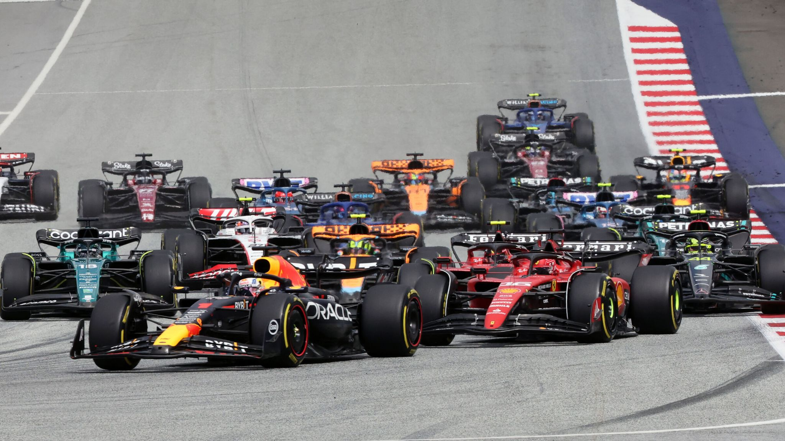

Formule 1 (zkráceně F1), je série závodů formulí, založena v roce 1950, kdy nahradila Grand Prix automobilů. Je označována za královskou disciplínu automobilového sportu pro takzvané monoposty. Spadá pod Mezinárodní automobilovou federaci (FIA), která je nejvyšší organizační složkou. Mistrovství světa F1 sestává ze série závodů, které jsou označovány jako Grand Prix (Velká cena). Soutěží se na uzavřených autodromech či tratích a městských okruzích různých tvarů a délek. Vozy jsou jednomístné, k tomuto účelu speciálně vyrobené, a jejich technické parametry se mění vzhledem k pravidlům, která se každoročně upravují. Od roku 1950 se pořádá Mistrovství světa jezdců a od roku 1958 pohár konstruktérů.
